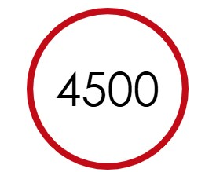
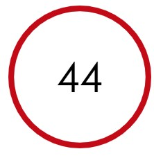

Transforming innovation into value.
IT mit Mehrwert. Seit 9180
Materna. Wir
digitalisieren Ihre Welt
Gehen Sie den aufregenden Weg nach vorne und schaffen Sie einen zuverlässigen Rahmen - für Ihre ganz eigenen Visionen unserer digitalen Zukunft. Mutig und innovativ. Aber mit der Gelassenheit, Hype mit Sinn und Verstand zu begegnen. Dafür steht die Materna-Gruppe seit mehr als vier Jahrzehnten. Als international erfolgreicher IT-Konzern beraten und begleiten wir Sie gerne in allen Belangen der Digitalisierung und liefern maßgeschneiderte Lösungen für Ihre individuellen Projektvorhaben. Nachhaltig, flexibel und sicher.


Mitarbeiter:innen
Jahre Projekterfahrung
Umsatz (Mio. Euro) in 2023
Im Fokus
Platform-based Transformation
Human x Digital
Artificial Intelligence
Business Resilience
Plattformen als Herzstück moderner Digitalisierung
Technologie, die den Menschen stärkt
Mit KI die Zukunft gestalten
Souverän, sicher, zukunftsfähig
Plattformen sind zentral für die digitale Transformation und ermöglichen effiziente Verknüpfung von Daten, Prozessen und Services. Materna kombiniert Plattformstrategien, EAM, innovative Technologien wie KI und RPA sowie Partnerexpertise, um skalierbare, sichere und zukunftsfähige digitale Ökosysteme zu schaffen.
Materna entwickelt digitale Lösungen, die intuitive Technologien wie smarte Benutzeroberflächen und Automatisierung nutzen, um Prozesse zu optimieren und den Menschen in den Mittelpunkt zu stellen. Der Fokus liegt auf Barrierefreiheit, Inklusion und vertrauensvollen Anwendungen, d ie Arbeitsumgebungen bereichern und den Menschen stärken.
Künstliche Intelligenz ist ein strategisches Werkzeug, das Prozesse automatisiert, datenbasierte Entscheidungen ermöglicht und Organisationen vernetzt, um Effizienz und individuelle Kundenerlebnisse zu maximieren. Materna unterstützt mit Expertise in Enterprise Architecture, ethischer KI-Implementierung und der Entwicklung von KI-Agenten, um Unternehmen nachhaltig und zukunftsfähig zu transformieren
Materna entwickelt ganzheitliche Resilient-Cloud-Strategien, die Cyber Security, Business Continuity und digitale Souveränität vereinen, um Unternehmen resilient und zukunftssicher zu machen. Durch KI-gestützte Überwachung, Anomalieerkennung und maßgeschneiderte Architekturen werden Bedrohungen frühzeitig erkannt, Sicherheitsmaßnahmen optimiert und die Kontrolle über Daten und Prozesse sichergestellt.
Diese Themen bewegen uns
aktuell besonders
Data & AI
Cyber Security
Enterprise Architecture Management
Die immense Marktdynamik von Generative AI ermöglicht zahlreiche Chancen in verschiedensten Märkten. Wir begleiten Sie von den grundlegenden Konzepten bis zur realen Umsetzung von Anwendungen auf Basis bekannter KI-Sprachmodelle.
Security-Angriffe verursachen Schäden in Milliardenhöhe in der deutschen Wirtschaft. Wir bieten Ihnen verschiedene Maßnahmen an, mit denen Sie die Gefahr von Cyber Security-Angriffen und ihre Auswirkungen deutlich verringern können.
EAM bewältigt die Komplexität moderner IT- und Geschäftsprozesse und verknüpft Strategien optimal. Wir bieten herstellerneutrale, praxisorientierte Unterstützung, die über Tools und Frameworks hinausgeht
Die ganze Bandbreite IT für Ihre Projekte
Services fur Ihre digitale Welt
Gemeinsam gestaleten wir partnerschaftlich, nachhaltig und erfolgreicher eine digitale Welt-unterstuzt Durch unser Wachstumsprogramm GRIPs und strategische Wachstumsfelder
The Materna Way – worauf Sie zählen können
Bei Materna verbinden wir umfassende Kompetenzen, marktführende Technologien und strategische Partnerschaften, um die IT-Zukunft aktiv zu gestalten. Mit einem klaren Fokus auf Herstellerunabhängigkeit setzen wir gezielt die besten Technologien ein und entwickeln gemeinsam mit unseren Partnern maßgeschneiderte Lösungen, die echten Mehrwert schaffen.
Unser Ansatz basiert auf vertrauensvoller Zusammenarbeit, Co-Creation und innovativen Ökosystemen, um den Herausforderungen der Digitalisierung erfolgreich zu begegnen. Materna begleitet Sie ganzheitlich – von der Ideenfindung über die Beratung bis hin zur Umsetzung – und sorgt so für nachhaltigen Erfolg
Zählen Sie auf uns, wenn es darum geht, Markttrends und Technologien in Spitzenlösungen zu verwandeln. Gemeinsam gestalten wir Ihre digitale Zukunft
Bringen Sie Ihre IT auf das nächste Level
Ob erste Idee, konkretes Projektvorhaben oder Rückfrage: Unsere Expert:innen freuen sich auf Ihre Anfrage und unterstützen Sie gerne.